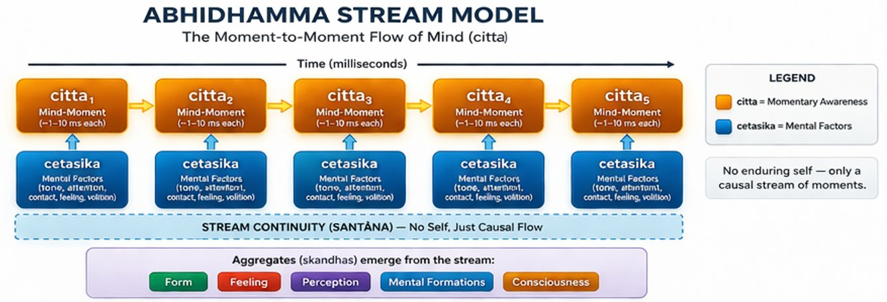
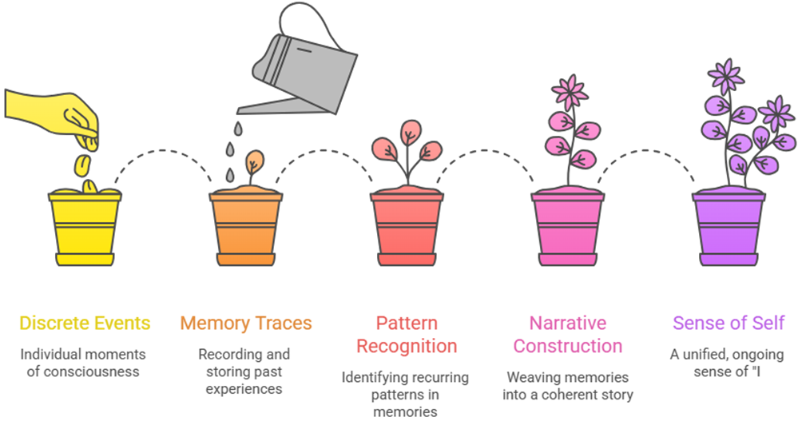

Part II — The Buddhist Deconstruction
Chapter 4: The Mind Without a Self (Abhidhamma)
If modern discussions of consciousness often feel abstract, it is partly because they begin at the wrong scale. They start with:
- “the mind,”
- “the self,”
- “consciousness,”
as if these were stable objects that could be examined from a distance.
The Abhidhamma does something far less comfortable. It breaks experience apart. Not conceptually, but phenomenologically, at the level of what is actually happening, moment by moment. And in doing so, it arrives at a view that is both disorienting and, for our purposes, unexpectedly precise: There is no continuous mind. There are only rapidly arising and passing events.
4.1From Substance to Process: The Central Move
Most of us carry an intuitive model of mind that goes something like this: there is a thinker, the thinker has thoughts, and the thoughts occur over time. This model is simple, familiar, and, according to the Abhidhamma, almost certainly wrong.
The Abhidhamma, which means 'higher teaching' in Pali, is the systematic psychological analysis developed within the Theravada Buddhist tradition. It does not begin with a theory of mind and then derive consequences. It begins with careful, sustained observation of experience, the kind of observation that meditation practice makes possible, and asks: what is actually happening, moment by moment, when we say we are thinking or perceiving or feeling? The answer it arrives at is radical. There is no thinker. There are only thoughts. There is no observer standing behind experience. There is only the stream of experience itself. What we call 'mind' is not a thing that has experiences. It is the succession of experiences itself, so rapid and so continuous that it creates the convincing appearance of a stable, unified self.
4.2Citta: The Moment of Consciousness
The basic unit of this stream is called citta, a single moment of consciousness. A citta is not a thought in the ordinary sense. It is something more fundamental: a single instance of knowing, the smallest unit of experience, lasting for an extraordinarily brief fraction of a second. Each citta arises in response to a specific object, a sight, a sound, a memory, an intention, performs a specific function (seeing, hearing, recognizing, deciding), and then ceases completely, giving way to the next citta in the stream. Classical Abhidhamma texts describe the speed of this arising and passing as so rapid that in the time it takes to snap your fingers, billions of mind-moments may have arisen and ceased.
Crucially, only one citta occurs at a time. There is no parallel awareness running in the background. The appearance of simultaneously seeing and hearing and thinking is itself constructed, it is the result of the stream switching between different types of citta so rapidly that the switches are invisible to ordinary introspection. Think of the way a film creates the illusion of continuous motion from a sequence of still frames. The Abhidhamma says something similar is happening in the mind: the continuity of experience is constructed from a very fast sequence of discrete moments, and there is no projector and no audience, only the projection.

4.3Cetasikas: What Colours Each Moment
A citta does not arise alone. Each moment of consciousness is accompanied by mental factors called cetasikas, qualities that shape and color that particular moment. These include attention (which determines what the citta is directed toward), feeling tone (whether the moment is pleasant, unpleasant, or neutral), perception (the recognition and labelling of what is being experienced), intention (the motivational quality that moves toward or away from something), effort, concentration, and many emotional qualities, compassion, aversion, clarity, confusion, and so on.
The combination of a citta with its particular configuration of cetasikas is what gives each moment of experience its specific character. A moment of seeing a beautiful sunset is different from a moment of seeing a warning sign not because 'seeing' is different, but because the accompanying cetasikas are different, the feeling tone, the degree of attention, the emotional coloring. This gives the Abhidhamma what amounts to a modular decomposition of experience: not a vague holistic description of 'the mind', but a structured enumerable account of what is actually present in any given moment of consciousness. For anyone thinking about how to engineer a mind-like system, this level of specificity is genuinely valuable.

4.4The Five Aggregates: A Broader Map
While the citta-cetasika framework analyses the micro-structure of individual moments, Buddhist teaching more broadly organizes experience into five aggregates (skandhas in Sanskrit, khandhas in Pali). These are: form (rupa), the physical body and sensory input; feeling (vedana), the pleasant, unpleasant, or neutral tone accompanying each moment; perception (sanna), recognition and labelling; mental formations (sankhara), intentions, habits, reactions, the motivational structure of the mind; and consciousness (vinnana), awareness of objects. Together they cover everything we normally call 'a person' or 'a mind'.
The key point the tradition makes about these five aggregates is stated quietly but it lands like a stone in still water: none of them is the self, none of them contains the self, and none of them belongs to a self. They are components of experience, not owners of it. What we call 'I' is a convenient label applied to a collection of processes that have no underlying entity binding them together. The self that feels so certain and so present is, on this analysis, a construction, a story the system tells about itself, not a thing the system is.
4.5Why Does It Feel Continuous?
A natural objection arises: if experience is actually a series of discrete moments, why does it feel like a continuous stream? The Abhidhamma's answer is that the continuity is constructed. The system integrates across moments, links events into sequences, and builds narrative coherence from rapid succession. In modern terms: memory traces carry forward the content of previous moments, predictive mechanisms anticipate the next moment before it arrives, and pattern completion fills in gaps that introspection never detects. The result is a continuous experience of a stable world observed by a stable self unfolding in continuous time, none of which, underneath, is as stable or as continuous as it appears.
Experience, in this account, is neither unreal nor unimportant. The pain is real. The joy is real. The awareness is real. What is constructed, what is not ultimately there, is the fixed, permanent, independently existing self that ordinary thought assumes to be the experiencer of all of it.
4.6No Observer Behind the Scenes
Perhaps the most radical and practically significant implication of the Abhidhamma analysis is this: there is no observer separate from the process of observing. We habitually imagine a 'self' that watches thoughts arise and pass, an inner subject standing behind and witnessing experience. The Abhidhamma says this is itself a construction, there is seeing, hearing, thinking, but no seer, no hearer, no thinker as a separate entity. This is not nihilism, but it is not. Something is happening. What is happening is the seeing, the hearing, the thinking, and these arise without needing a self to do them.
For anyone who has sat in sustained meditation, this is not just a theoretical claim. At certain depths of practice, the habitual sense of a watcher behind experience can become transparent, not destroyed, but seen through. What remains is the experience itself, without the addition of an imagined witness. The Abhidhamma is, among other things, a precise map of what that seeing-through reveals.
4.7Mapping to Modern Ideas
The Abhidhamma's account of mind aligns, uncannily, with several modern frameworks. The description of mind as distributed processing without a central controller resonates with what neuroscience has found: there is no single location in the brain where 'the self' lives, no homunculus overseeing processing, only networks of neurons generating transient assemblies that give rise to the appearance of unified experience. The account of perception as construction, shaped by prior experience, expectation, and attention, maps onto predictive processing. The claim that there is no fixed internal observer aligns with what both cognitive science and contemplative research find when they look closely: the sense of a stable, continuous self is inferred and constructed rather than directly observed.
The critical difference is this: modern frameworks describe the structure and mechanism of mind. The Abhidhamma describes the lived texture of it from within. They are not competing. They are partial maps of the same territory, drawn from different vantage points. Each can correct and enrich the other.
4.8The Seven-Fold Model: Beyond the Five Aggregates
The Abhidhamma's analysis of experience into cittas and cetasikas operates at the level of moment-to-moment mind events. But Buddhist epistemology, particularly in the Yogacara school that developed alongside Abhidhamma, proposes a more structured account of the layers of mind, one that has direct relevance to the engineering question of how a self arises from processes that have no fixed center.
The classical Buddhist enumeration distinguishes six primary consciousness types corresponding to the six sense bases: visual consciousness, auditory consciousness, olfactory, gustatory, tactile, and mental consciousness. The first five are purely sensory, each arises when a sense organ contacts its appropriate object. The sixth, mental consciousness (mano-vijnana), is the reflective faculty that takes the outputs of the other five as its objects, and that also generates thoughts, memories, and intentions in the absence of direct sensory input. This is the layer at which most of what we call reasoning and deliberation occurs.
Yogacara psychology adds a seventh and eighth consciousness to this account. The seventh is manas, often translated as the defiled mental faculty or the I-making faculty. Manas operates below the level of deliberate thought and continuously misapprehends the eighth consciousness as a self. It is the source of the persistent, pre-reflective sense of being a separate subject, not a conclusion arrived at through reasoning but a structural feature of how the mind organises its own activity. Manas is, in engineering terms, the self-model that runs continuously in the background, coloring every moment of experience without ever being brought explicitly to attention.
The eighth consciousness is alaya-vijnana, the storehouse or repository consciousness. It functions as the continuity carrier of the system: the stream that persists across moments of experience, storing the seeds of past actions and perceptions that will ripen into future experience. Unlike the other seven, alaya-vijnana does not arise in response to objects. It is the background hum of the system, the continuous flow that links one moment of experience to the next and provides the substrate on which the other seven consciousnesses temporarily arise.
For the engineering of conscious systems, this seven-fold model is remarkably precise. The first six consciousnesses map onto sensory input channels and their integration in a reflective layer, equivalent to the sensorimotor ground and predictive world model of the candidate architecture. Manas maps onto the self-model layer: the continuous, pre-reflective process that treats the system's own states as 'mine.' Alaya-vijnana maps onto the temporal continuity layer: the persistent state that links moments into a stream. What the Yogacara analysis makes explicit is that continuity and self-hood are not the same thing. The alaya provides temporal continuity without providing selfhood. Manas provides the sense of selfhood by misreading that continuity as belonging to a fixed subject. One important qualification: the Yogacara tradition does not treat alaya as a neutral storage system. It is karmically saturated, carrying the seeds (bija) of past actions and perceptions that will ripen into future experience. It is empty and dependently arisen, not a stable realist substrate. The engineering mapping captures the continuity function; it should not be taken to capture the full Yogacara meaning. Both layers are necessary for what we recognize as personal consciousness, and both must have functional equivalents in any candidate conscious system.
The overlap is suggestive but not identical: modern frameworks describe structure and mechanism, while the Abhidhamma describes the lived texture of mind from within. They are not competing. They are partial maps of the same territory drawn from different vantage points.
4.9What This Means for Building Conscious Systems
If the Abhidhamma analysis is even approximately correct, then a system with genuine consciousness would need, at minimum, to implement something like the citta-cetasika structure: discrete processing events rather than static states, configurable mental factors (attention, valence, intention), a sequential flow with structured transitions, no central controller but distributed processing, and constructed continuity from moment to moment. None of these are exotic requirements. They are the direct engineering translation of what the most detailed first-person analysis of mind has found. The remarkable thing is not that they sound engineering-like. It is that a tradition developed two and a half thousand years ago through careful introspective practice arrived at a description of mind that maps so well onto what modern neuroscience and computational theory are independently converging on.
4.10The Limitation
The Abhidhamma tells us how experience is structured, how it unfolds, how the illusion of a self arises. It does not fully answer why there is experience at all. It analyses the content and structure of consciousness with extraordinary precision. But the question of presence, why is there something it is like to undergo this stream rather than nothing, remains. The Abhidhamma prepares the ground for this question without closing it. The next chapter descends one level further: not just what the stream is made of, but what the stream is made of is made of.
4.11Closing line
If the mind is not a thing but a stream, and if the self is not an entity but a construction, then the question changes. We are no longer asking: can we build a conscious thing? We are asking: can we recreate a process so dynamic, so integrated, so precisely structured that what we call consciousness appears? And whether appearance is enough remains to be seen.